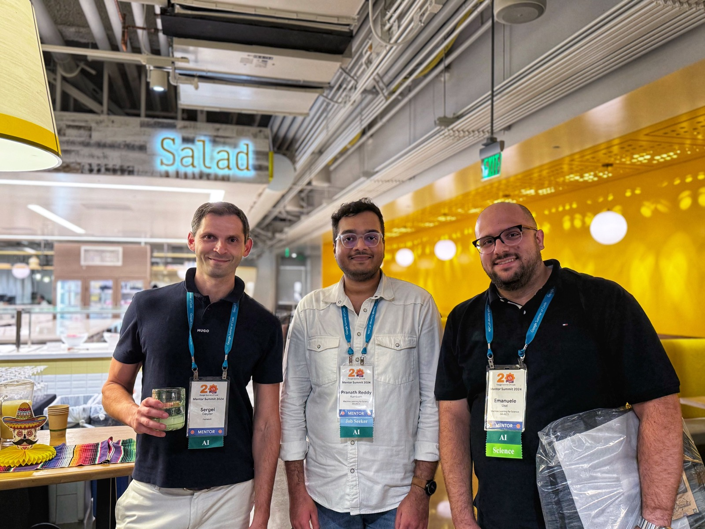

People & About
DeepLense is an open research group within ML4SCI. Our researchers, mentors, and student contributors develop AI for science.

About the group
Machine learning for the physical sciences
Our projects include foundation models for astronomy, neural operators for physical simulation, and AI agents that plan and run experiments. Strong gravitational lensing is a major focus. We use it to study dark matter and test how well models trained on simulations transfer to telescope observations.
DeepLense is part of ML4SCI, a nonprofit open-source organization that supports machine-learning projects across scientific disciplines.
Code, datasets, models, and reports are prepared for reuse where licensing and data access permit.
Results are reported with their experimental setting, assumptions, and known limitations.
Contributors work with researchers through scoped projects, reviews, and public documentation.
People
Researchers and contributors.
The team includes physicists, astronomers, machine-learning researchers, software developers, and student contributors.
Principal investigators
Principal Investigator · Brown University
Stephon Alexander
Theoretical physicist working across cosmology, quantum gravity, machine learning, and the foundational questions that connect them.
Active research team
Past collaborators
- Aleksandr Duplinskii
- Anirudh Shankar
- Apoorva Singh
- Archil Srivastava
- Atal Gupta
- Emanuele Usai
- Evan McDonough
- Geo Jolly Cheeramvelil
- J Rishi
- Kartik Sachdev
- Lucas José Velôso de Souza
- Marcos Tidball
- Mriganka Nath
- Peimeng Guan
- Ryker Von Klar
- Saranga K. Mahanta
- Sreehari Iyer
- Yashwardhan A. Deshmukh
- Yurii Halychanskyi
- Zhongchao Guan
Google Summer of Code 2026
Seven contributor projects.
The 2026 projects cover real-lens finding, foundation models, quantum representations, neural operators, super-resolution, and agent-based simulation.
Official GSoC listing ↗Support
Institutional and program support.
DeepLense is supported through research funding, university collaboration, and open-source mentorship programs.
National Science Foundation
SLINGSHOT
“Decoding Dark Matter through Gravitational Lensing” supports simulation, anomaly detection, property inference, and open astronomical tooling.
- Award
- 2108645
- Awarded
- $371,954
- Program
- 2021–2026

Open-source mentorship
Google Summer of Code
DeepLense has hosted multi-year projects in which contributors develop public software, experiments, and research reports with mentor review.

Institutional home
The University of Alabama
Support from Physics & Astronomy connects the program to teaching, research, and the broader SLINGSHOT collaboration.
Collaborate
How to work with DeepLense.
Most DeepLense repositories contain code released with specific papers and are maintained as research artifacts rather than general-purpose community projects. If you have a research idea or would like to contribute, email ml4-sci@cern.ch before opening a pull request. Briefly describe your idea, the research area or repository it relates to, and how you would like to contribute. We can then connect you with the appropriate authors or suggest a suitable project.